支撑剂
本节介绍 3DEC 中裂隙内支撑剂的模拟，内容主要取自 Detournay 等（2015）。
引言
水力压裂是油气行业用于增产的一项技术。压裂处理通常涉及将支撑剂以悬浮于压裂液中的形式注入。注入结束后，裂隙闭合并压在支撑剂上，形成导流通道，使油气能够有效流出。
模拟裂隙内支撑剂输运和铺置时，通常将支撑剂与压裂液表示为混合物，3DEC 也采用这一方法。假定支撑剂颗粒相对于裂隙张开度很小，混合物中的支撑剂用其体积浓度表示。
该算法考虑了流固耦合，并表示了多种效应，包括充填层形成（浓度达到给定值时，支撑剂形成充填层，只有压裂液可穿过）、桥堵（裂隙宽度相对于粒径足够小时，支撑剂停止运动）、支撑剂对流（密度梯度使载有支撑剂的流体运动）以及沉降（重力引起浆液与支撑剂之间出现速度滑差）。
逻辑概述
3DEC 中节理内支撑剂的输运与铺置建模时，假定在无重力引起的沉降时支撑剂与流体以相同速度运动。该逻辑沿用 Adachi 等（2007）总结的一般方法。假定支撑剂颗粒通常远小于裂缝宽度，且裂缝中支撑剂的分布由体积分数表示。此外，支撑剂与携砂液之间相对速度的唯一机制是重力引起的沉降。
支撑剂体积分数达到饱和值时，浆液（压裂液和支撑剂的混合物）的行为类似于多孔固体，支撑剂颗粒形成“充填层”。此外，如果节理开度相对于粒径变小，支撑剂的流动会受到抑制，同样形成“充填层”或“桥堵”。随后考虑两种效应：首先，支撑剂充填层能够承担裂隙闭合产生的荷载（力学效应）；其次，只有携带液能够通过充填层孔隙流动（流体输运效应）。
当允许发生沉降时，支撑剂速度中增加一个沿重力方向的矢量分量，以计入颗粒沉降。沉降速率与给定尺寸的颗粒在给定黏度流体中的（重力下）斯托克斯速度成正比。此外，对斯托克斯速度乘以一个经验系数（体积分数的函数），以计入颗粒相互作用与壁面效应。
基本方程
支撑剂体积分数 \(C\) 的对流（体积守恒）方程为
式中，\(a\) 为节理张开度，\({\bf v}_p\) 为支撑剂速度矢量。
把 式 (1) 与 3DEC 中的流体流动逻辑进行耦合，是通过浆液流速 \({\bf v}\) 实现的：该流速由求解现有流体流动方程得到，并注意到浆液流量 \(\bf q\)（节理单位宽度上）与浆液流速的关系为：
若允许发生沉降，则支撑剂速度由浆液流速按下式计算：
其中，滑移速度 \({\bf v}_s\) 是平行于重力加速度 \(\bf g\) 的矢量。滑移速度的大小由 Stokes 方程计算，并施加一个修正系数（浓度的函数），以考虑支撑剂相互作用和壁面效应：
在式 (4) 中，\({\bf v}_{stokes}\) 为单颗粒的 Stokes 阻力定律：
其中，\(\rho_p\) 和 \(\rho_f\) 分别为固体颗粒和携带液的密度，\(d_p\) 为支撑剂的代表性直径，\(\mu\) 为流体黏度。
此外，Richardson 和 Zaki 相关关系（1954）给出了广泛使用的修正系数形式：
将式 (6) 代入式 (4)，再将所得表达式代入式 (3)，得到：
其中
图 1（Figure 1） 绘出了沉降速率系数 \((1-c)^{5.65}\) 随体积浓度 \(c\) 的变化。
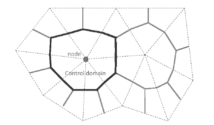
图 1：沉降速率系数与浓度的关系。
支撑剂对流
另一个需要关注的耦合变量是浆液密度，它会影响流体渗流的 Reynolds 控制方程。在支撑剂算法的公式中，采用 Boussinesq 近似，即由浓度变化导致的流体密度变化，仅在产生浮力时才具有显著影响。
在现有 3DEC 流体渗流算法中，节理单位宽度的流量为：
其中，\(k=a^2 / (12 \mu)\) 为节理流动系数，\(\rho\) 为流体（浆液）密度，\(g\) 为重力。在 Boussinesq 近似中，假定式 (6) 中的流体密度与支撑剂浓度 \(c\) 满足以下线性关系：
式中，\(\rho_f\) 为携砂液的密度，\(\rho_p\) 为支撑剂密度。
浆液黏度
通过经验公式，按支撑剂浓度调整携带液黏度，即可得到浆液黏度与流体渗流的耦合关系。3DEC 采用 Mack 和 Warpinski（2000）所述的关系
其中，\(\mu_{base}\) 为用户输入的流体黏度（block fluid property viscosity），\(c_{limit}\) 为用户定义的支撑剂开始承载时的浓度限值（block fluid proppant concentration-limit-volume）。当 \(c/c_{limit}\) 趋近于 1 时，\(\mu_{slurry}\) 趋近于无穷大，因此在 3DEC 中，将 \(c/c_{limit}\) 的最大值设为 0.9。
可绘制浆液黏度（ / / ），也可通过 FISH（flowplane.vertex.visc）查询。
数值实现
对流方程采用以节点为中心的有限体积法进行数值求解。该格式利用了流体流动计算中流动平面的三角形离散。节点是位于三角形顶点的离散特征。为每个节点指定一个控制域，支撑剂体积分数 \(c\)、节理中的支撑剂高度 \(h\) 以及节理张开度 \(a\) 都在控制域上取平均。某个节点的二维控制域边界是由直线段构成的多边形：每个以该节点为公共顶点的三角形定义两条线段，每条线段把三角形中心与该节点出发的一条边的中点相连，见图 2（Figure 2）。
节点（位于节理内）处的支撑剂体积分数为
而节点处的支撑剂高度为
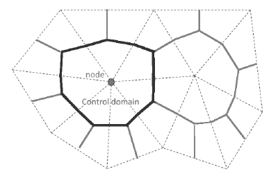
图 2：3DEC 渗流平面的三角形离散（虚线），显示节点及控制域（实线）。
为用有限体积法离散 式 (1)，先对面积为 \(A\) 的控制域积分：
然后对穿过各控制域边界的通量作适当近似。
开度不变时的输运
对于存在输运而开度不变的情况，分别考察式 (14) 中的每一项。
瞬态项
存在输运（且开度保持不变）时，瞬态项积分的离散形式为
其中，\(\Delta t\) 为时间步长。
平流项
利用式 (3)，将平流项表示为浆液速度和沉降速度的函数：
用高斯散度定理把控制域上的积分转换为其多边形边界 \(\mathscr{C}\) 上的积分：
式中，\(n\) 为边界上由控制域向外的法向。
利用式 (2)，将式 (17) 中的浆液扩散项表示为节理单位宽度流量的函数：
浆液扩散项的离散形式为：
其中，\(\sum_s\) 表示对控制域边界各线段求和，\(L_s\) 为每一线段的长度。
矢量 \({\bf n}\) 是该线段的法向矢量，指向以点 \(P_1\) 为中心的控制域之外，进入以点 \(P_2\) 为中心的相邻控制域，见图 3（Figure 3）。\(c_s\) 的值取决于为获得符合物理实际的解而采用的对流格式。这里采用迎风格式，即从流动上游取被平流输运的量 \(c_s\)：
迎风格式无条件稳定，但所得解会高估扩散项，使前缘出现数值弥散。采用带通量限制器的二阶修正项，有望提高解的质量；不过，当前版本的格式尚未实现这一技术。
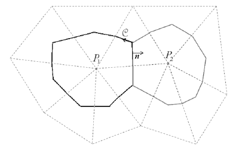
图 3：用于说明迎风对流格式的控制域与相关量。
式 (17) 中的沉降扩散项是主变量 \(c\) 的非线性函数。数值格式中采用的离散形式为
式中，\(h = ca\)（见 式 (13)），\(\overline{c}\) 的取值（用于表示修正项 \(f^*\)）为包含该边界段的三角形三个节点上 \(c\) 的平均值，并且
联立 式 (15)、式 (19) 和 式 (21)，可对每个控制域写出 式 (14) 的离散形式：
在（显式）时间步进数值格式中，式 (23) 右端的所有量都假定由上一时步已知。对每个节点计算该步新的支撑剂高度，然后用 式 (12) 更新体积分数。
现有流体渗流格式假定流体体积平衡。此外，平流格式保持支撑剂体积守恒（支撑剂不会损失，因为它只是在渗流域中从一个控制体积移到另一个控制体积）；下面的示例将对此进行说明。
力学耦合
无输运时的开度变化
除对流引起的浓度变化外，节点处的浓度还随张开度变化。当没有输运发生时，对流方程（式 (14)）简化为
该方程意味着乘积 \(ca\) 保持不变。换言之，由于在开度发生变化的力学步内，支撑剂质量保持恒定，因此可根据该步中节理开度的变化（从 \(a_0\) 变为 \(a_1\)），直接计算新浓度 \(c_1\)，如下所示：
式中，\(c_0\) 为该步之前的浓度。
支撑剂充填层承担的荷载
当支撑剂（体积）浓度达到饱和值 \(c_{limit}\) 时，即达到支撑剂承担荷载的条件；该值等于堆积支撑剂的最大初始（无荷载）密度 \(\rho_0\) 与支撑剂颗粒密度 \(\rho_p\) 之比。该限值用 block fluid proppant concentration-limit-volume 命令设置。
对于具有最大初始（未加载）密度、受到侧向约束并施加轴向位移 \(\Delta u\) 的材料充填层，其承载应力的一般方程为：
式中，\(B\) 为约束模量（对各向同性材料等于 \(K + 4G / 3\)），\(h_p^*\) 为无荷载时充填层的高度。充填层的约束模量用 block fluid proppant modulus 命令设置。由支撑剂试验得到的裂缝宽度与应力的关系表明，式 (26) 中的线性假定是合理的。
对张开度为 \(a\) 的裂缝，把 式 (26) 写成增量形式：
该方程仅在满足支撑剂承载条件（即 \(c > c_{lim}\)），且总应力 \(\sigma\) 始终为压应力时有效。如果不满足条件，支撑剂不承担荷载。常数 \(c_{lim}\) 和 \(B\) 是支撑剂的输入属性。
若某节点处 \(\sigma\) > 0，则支撑剂的对流被阻断。但携砂液仍可流过充填层；充填层的固有渗透率是用户输入值（block fluid proppant permeability）。
支撑剂对接触法向力 \(F_n\) 的力学效应由下式表示：
式中，\(\Delta \sigma\) 为一个时步内支撑剂应力的变化量，\(w_f\) 为合适的节点-接触权重因子。
桥堵
若裂缝宽度小到与颗粒尺寸乘以某经验系数（>1）相当，则支撑剂被堵住。需要该经验系数，是因为裂缝中形成拱或桥时，张开度大于颗粒直径也可能发生堵塞。
粒径和堵塞系数是用户输入值，分别由 block fluid proppant grains-size 和 block fluid proppant grains-size-factor 命令指定。粒径系数的默认值为 1。
发生堵塞时，支撑剂对流停止，但仍可通过指定一个与流动单元固有渗透率相乘的系数使流体流动。用 block fluid proppant permeability-factor 命令给出乘数（一般小于 1），以降低通过被堵塞流动单元的流量。默认值为 0，即被堵塞单元中不发生流动。
若流动单元中任一节点的张开度小于该限值，则认为该流动单元被堵塞。
支撑剂对流
在公式中，浆液密度变化引起的对流机制，通过按 式 (10) 在流体输运方程中局部调整浆液密度来考虑。
流动平面相交处的条件
以下讨论采用图 4（Figure 4） 所示的简化双平面构型。
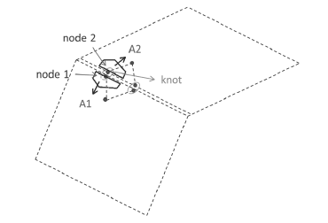
图 4：两个相交的流动平面，含离散三角形、边节点和控制域（深色）。
每个渗流平面均离散为三角形；位于两平面交线上的节点 1 和节点 2 归入同一个“渗流节点”。将节点 1 和节点 2 的控制域集中到一起，并将结果赋予该渗流节点：
此外，节点张开度按节点量上的面积平均求值：
采用上述数值格式计算渗流节点处新的支撑剂高度 \(h_{knot}\)，再将支撑剂高度除以渗流节点开度，即 \(c_{knot} = h_{knot} / a_{knot}\)，得到渗流节点处支撑剂浓度 \(c_{knot}\)。将该浓度赋予节点 1 和节点 2，并将浓度与节点开度相乘，计算节点处新的支撑剂高度 \(h_1 = c_{knot} a_1\)、\(h_2 = c_{knot} a_2\)。交汇处的支撑剂体积平衡
采用该格式时自动满足守恒。
稳定时间步长
流体与支撑剂输运计算有两种运行方式：a）非耦合，先进行渗流计算，再进行支撑剂输运计算；b）耦合，每执行一个渗流计算步后，就执行支撑剂输运计算。
此外，多数情况下，支撑剂输运的稳定显式时间步长远大于显式流体渗流时间步长。
在非耦合模拟中，通过考虑一维平流方程离散形式的 CFL（Courant-Friedricks-Lewy）条件，计算支撑剂输运的稳定时间步长：
此时 Courant 数定义为：
其中，\(\Delta t\) 为支撑剂时间步长，\(\Delta x\) 为离散长度，稳定性条件为
对于 3DEC 的非耦合情形，采用基于 式 (33) 的如下稳定时步表达式：
其中，\(\Delta L_{min}\) 为最小离散长度，\(\left | {\bf v}_{p,max} \right |\) 为渗流平面各三角形中支撑剂速度的最大值。
在耦合模拟中，稳定时步取与显式流体步相同。
在流体-支撑剂-力学耦合计算中，每个计算步先进行流体流动计算，然后进行支撑剂输运计算，最后按设置取足够数量的力学步，使系统保持准静态平衡。
边界条件和初始条件
可用 flowplane vertex initialize proppant-volume 命令把流动平面中的支撑剂浓度初始化为非零值。可给出范围，以便在不同流动平面中设置不同的初始浓度。
支撑剂输运问题考虑两类边界条件：指定支撑剂体积通量，以及指定体积分数。
第二类在物理上难以实现，引入它只是为了便于把数值结果与现有解析解进行比较。
要注入支撑剂，可用 flowknot apply proppant-volume 命令指定注入流体中的支撑剂浓度。注意，若在指定边界位置没有流体流入或流出网格，则支撑剂不会被加入（或减去）系统。这意味着必须在与支撑剂边界条件相同的位置施加固定压力或流体流量边界条件，才能注入支撑剂。
示例
平面流动
用一个简单的对流试验检验平面水平节理（张开度恒定且均匀）中支撑剂输运逻辑的功能。节理长 10 m、宽 1 m，张开度为 0.1 mm。沿节理长方向施加 0.1 MPa/m 的均匀压力梯度。流体黏度为 10−3 Pa · m。节理离散长度为 0.25 m。按试验所选参数，裂缝中的流速约为 8.33 10−2 m/s，即 1/12 m/s（图 5（Figure 5））。
随后沿节理左侧（短）边以浓度 0.3 注入支撑剂。注入 60 s 后的支撑剂浓度等值线见图 6（Figure 6）。12 s、36 s 和 60 s 的浓度剖面绘于图 7（Figure 7）。虚线给出基于流体流速的理论支撑剂前缘。注入 12 s 后，支撑剂前缘大致位于理论线附近；其后支撑剂前缘逐渐减速并落后于理论线。这是因为注入支撑剂后流体黏度增大、流动减慢。注入 60 s 后的流体黏度与流速见图 8（Figure 8）。可以看到，在支撑剂浓度最高处黏度增大了一倍以上，而最大流速下降了约 30%。

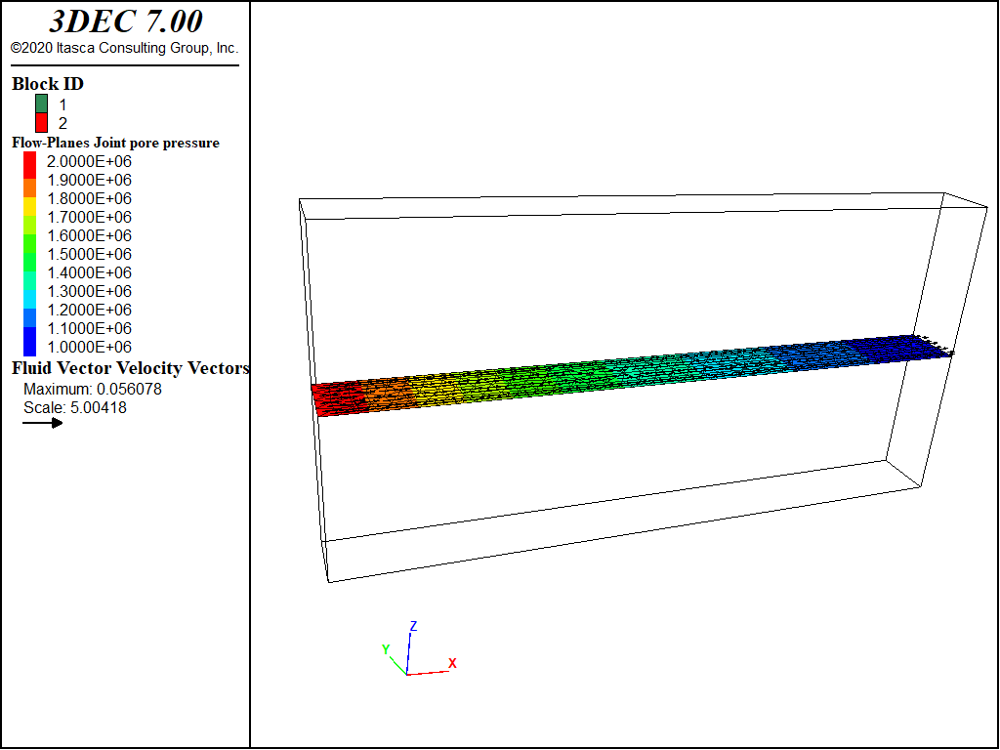
图 5：稳态孔隙压力和流体速度。

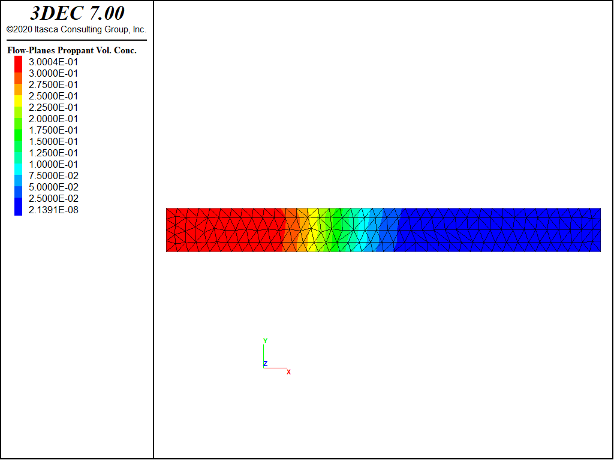
图 6：60 s 后的支撑剂浓度。

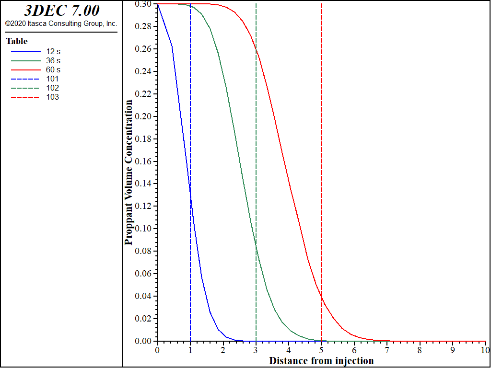
图 7：三个不同时刻沿绘图平面中心的支撑剂浓度剖面；虚线表示恒定黏度下支撑剂的理论前缘。

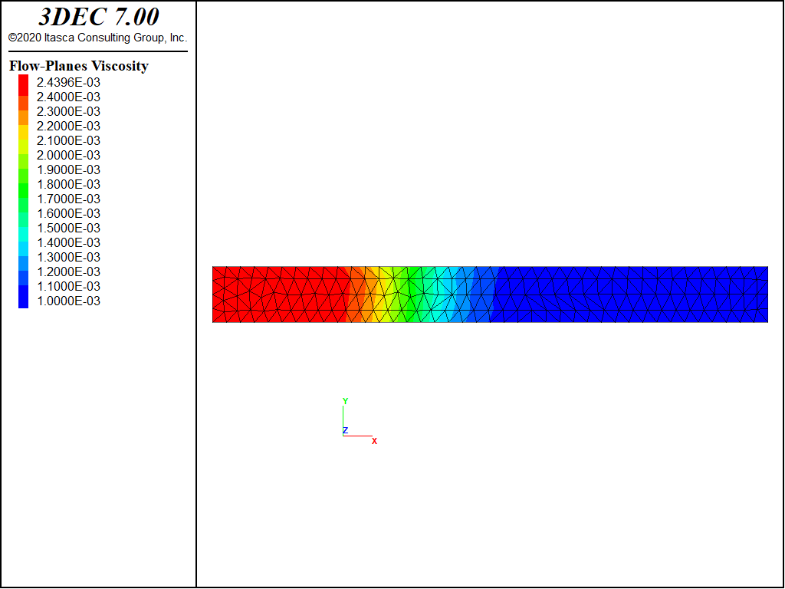
图 8：60 s 后的黏度和流体速度。
数据文件
model new
model random 10000
model config fluid
model large-strain off
;
block create brick 0 10 -0.5 0.5 -2.5 2.5
;
block cut joint-set dip 0
;
block zone generate edgelength 0.25
block zone cmodel assign elastic
block zone property density 2500 shear 2e9 bulk 5e9
block contact jmodel assign mohr
block contact property stiffness-normal 5e10 stiffness-shear 1e10
flowplane vertex property aperture-initial 1e-4 aperture-minimum 1e-5 ...
aperture-maximum 2e-4
block fluid property bulk 0.05e9 density 1000 viscosity 1e-3
;
history interval 1000
flowknot history pore-pressure position 0 0 0
flowknot history pore-pressure position 3 0 0
flowknot history pore-pressure position 5 0 0
flowknot history pore-pressure position 7 0 0
;
model fluid active on
model mechanical active off
;
flowknot apply pore-pressure 2e6 range position-x 0 position-z -0.1 0.1
flowknot apply pore-pressure 1e6 range position-x 10 position-z -0.1 0.1
;
; --- 运行至稳态流动 ---
model cycle 20000
;
model save 'advec-ss'
;
; --- 现在注入支撑剂
flowknot apply proppant-volume 0.3 range position-x 0 position-z -0.1 0.1
;
block fluid proppant active on
;
model history fluid time
flowplane vertex history proppant-vconcentration position 1 0 0
flowplane vertex history proppant-vconcentration position 3 0 0
flowplane vertex history proppant-vconcentration position 5 0 0
;
model fluid time-total 0
;
fish define profile(itab)
;
; 建立沿 y=0 的支撑剂浓度分布
; 导出到输入数据表 itab（整数）
local tabp = table.get(itab)
loop foreach local fpx flowplane.vertex.list
local pos = flowplane.vertex.pos(fpx)
if math.abs(comp.y(pos)) < 0.1
table(tabp,comp.x(pos)) = flowplane.vertex.proppan.vconc(fpx)
end_if
end_loop
; 另建一个数据表，用于显示理论支撑剂前缘的位置
tabp = table.get(itab+100)
local front = 1.0/12.0*fluid.time.total
table(tabp,front) = 0.0
table(tabp,front+0.001) = 0.3
end
;
;
model solve fluid time 12
[profile(1)]
;
model solve fluid time 24
[profile(2)]
;
model solve fluid time 24
[profile(3)]
;
table '1' label '12 s'
table '2' label '36 s'
table '3' label '60 s'
;
model save 'advec-60s'
;
注入
本例模拟向一个含有两个相互垂直裂隙面的 10 m x 10 m x 10 m 弹性材料块体内注入流体。块体的初始应力在 \(x\) 和 \(z\) 方向为 3 MPa，在 \(y\) 方向为零。第一个裂隙面为水平面，穿过块体中心；第二个裂隙面为竖直面，位于 \(x\) = 2.5 m 处。在水平裂隙面中心施加载有支撑剂的流体体积源（注意，所指定范围确保仅向一个渗流节点注入）。注入流体中的支撑剂体积浓度为 0.1。
图 9（Figure 9） 显示了模拟至 2 s 时裂隙中的孔隙压力等值云图和比流量矢量。流体已在第一个裂隙中大范围迁移，也已进入第二个裂隙。图 10（Figure 10） 绘出了 2 s 时的裂隙开度。图 11（Figure 11） 显示了模拟至 2 s 时的支撑剂浓度等值云图。模拟表明，支撑剂在第一个裂隙中呈径向迁移，也进入了第二个裂隙。比较源处注入的支撑剂体积与模型中分布的支撑剂体积（使用 FISH 函数计算），可知模拟结束时体积平衡的相对误差小于 0.2%。

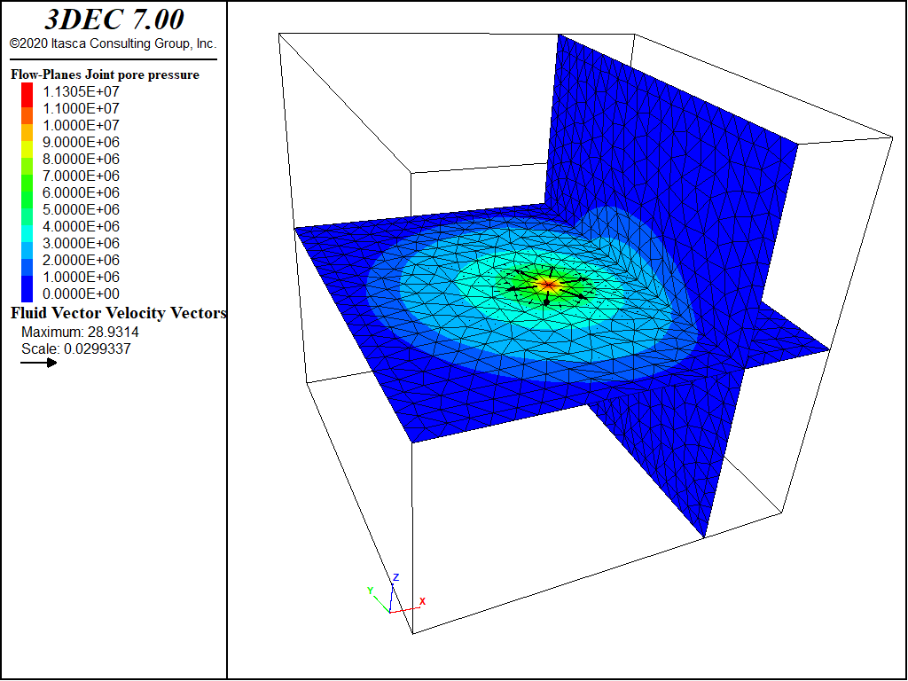
图 9：注入 2 s 后的孔隙压力与流速。

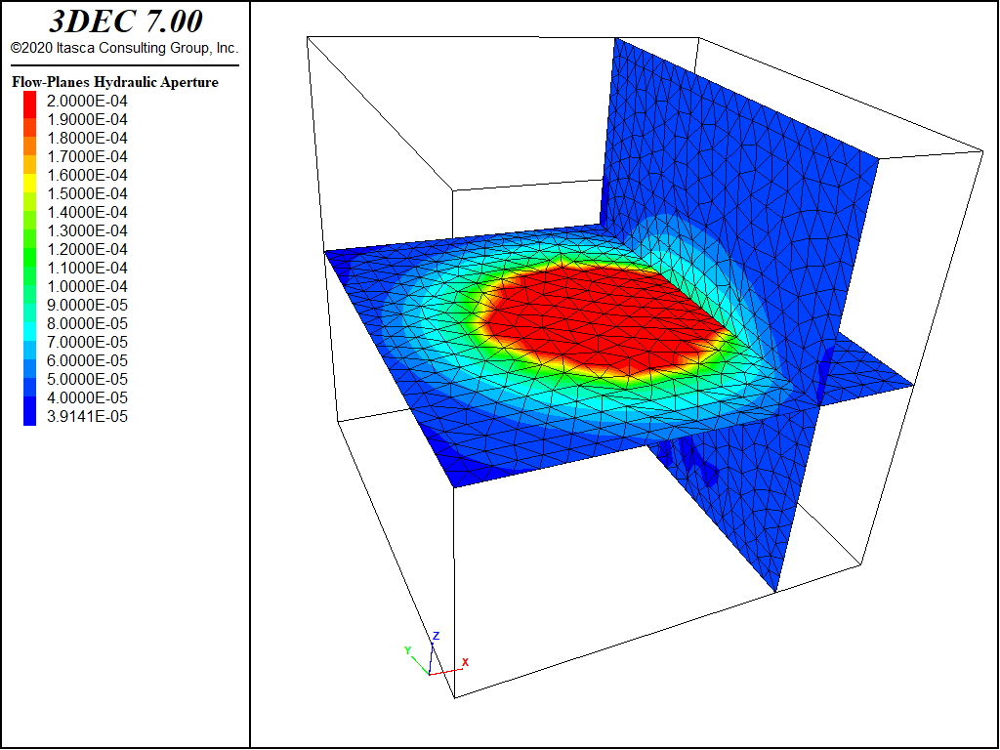
图 10：注入 2 s 后的裂隙开度。

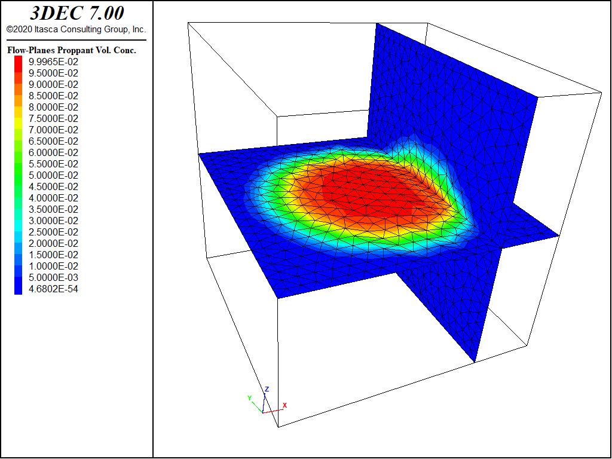
图 11：注入 2 s 后的支撑剂浓度。
数据文件
model new
model random 10000
model config fluid
model large-strain off
block create brick -5 5 -5.0 5.0 -5 5
block cut j-set
block cut j-set dip 90 d-d 90 or 2.5 0 0
block zone generate edgelength 0.5
block zone cmodel assign el
block zone prop density 2500 shear 2e9 bulk 5e9
model save "mesh"
block contact jmodel assign mohr
block contact property stiffness-normal 5e10 stiffness-shear 1e10
flowplane vertex prop ap-ini 1e-4 ap-min 1e-5 ap-max 2e-4
block fluid property bulk 0.05e9 density 1000 viscosity 1e-3
block insitu stress -3e6 0 -3e6 0 0 0
block face apply stress -3e6 0 -3.0e6 0 0 0 range pos-z 5
block face apply stress -3e6 0 -3.0e6 0 0 0 range pos-x -5
block gridpoint apply vel-x 0 range pos-x 5
block gridpoint apply vel-x 0 vel-y 0 vel-z 0 range pos-z -5
block hist dis-x pos 0 0 0
block hist dis-y pos 0 0 0
block hist dis-z pos 0 0 0
flowknot hist p-p pos -5 0 0
flowknot hist p-p pos -2 0 0
flowknot hist p-p pos 0 0 0
flowknot hist p-p pos 2 0 0
flowplane vertex his proppant-vconc pos -2 0 0
flowplane vertex his proppant-vconc pos 0 0 0
flowplane vertex his proppant-vconc pos 2 0 0
flowknot apply discharge 0.01 ...
range pos-x -0.3 0.2 pos-y -0.3 0.3 pos-z -0.1 0.1
flowknot apply proppant-volume 0.1 ...
range pos-x -0.3 0.2 pos-y -0.3 0.3 pos-z -0.1 0.1
model fluid active on
model mech active on
block fluid proppant active on
;------------------------
fish def check_volume
global propp_vol = 0.0
loop foreach local fpx flowplane.vertex.list
propp_vol = propp_vol + flowplane.vertex.area(fpx) * ...
flowplane.vertex.proppant.thick(fpx)
end_loop
; 体积等于流体注入速率乘支撑剂浓度再乘时间
global volume_inject = 0.01*0.1*fluid.time.total
local status = io.out('current stayed proppant vol: ' + string(propp_vol))
status = io.out('actual injected proppant vol: ' + string(volume_inject))
end
model mechanical substep 1
model mechanical slave on
model solve time-total 2.0
[check_volume]
model save "injection"
桥堵
若裂缝宽度小于若干个颗粒直径，则很可能形成桥堵，从而阻止（或减少）流体和支撑剂的进一步流动。以下算例演示了这一效应。
创建一个具有两种不同属性的渗流平面。平面的一部分赋予 100 \(\mu\)m 的开度，其余部分的开度为 80 \(\mu\)m。施加初始应力后，开度分别减小至 40 \(\mu\)m 和 20 \(\mu\)m（图 12（Figure 12））。向平面开度较大的部分注入流体和支撑剂。模型以非耦合方式运行（仅流体渗流）。
预计流体前缘到达较窄开口时流动将受到限制。支撑剂颗粒尺寸设为 10 \(\mu\)m。默认的桥堵颗粒尺寸系数为 1（即若流动平面张开度小于 1 × 10 \(\mu\)m，就会发生桥堵）。由于流动平面狭窄段的张开度为 20 \(\mu\)m，预计不会发生桥堵。图 13（Figure 13）和图 14（Figure 14）给出注入 10 s 后的孔隙压力与支撑剂浓度。在流动平面各段的交界处流动明显受到限制，但流体和支撑剂都能通过。
将粒径系数设为 3 后重新运行模型，这意味着渗流平面开度小于 30 \(\mu\)m 时会发生桥堵。堵塞处的渗透率系数设为 0.1，即穿过堵塞处的流量为无堵塞时的十分之一。
图 15（Figure 15）给出注入 10 s 后的孔隙压力。与图 13（Figure 13）相比，节理狭窄段的压力降低。图 16（Figure 16）给出支撑剂浓度。可见在张开度由宽变窄的过渡处，没有支撑剂通过桥堵。

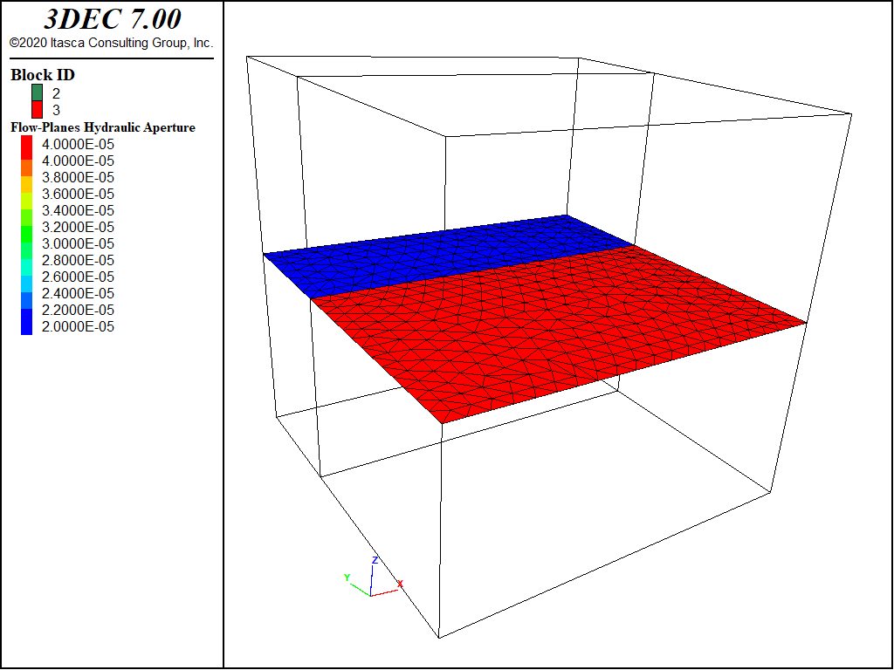
图 12：渗流平面上的开度分布。

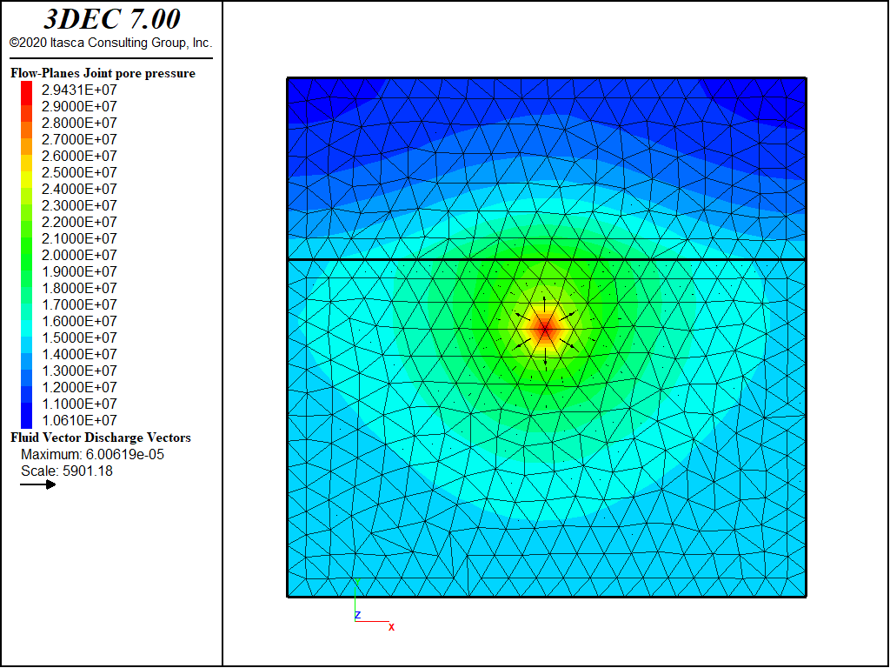
图 13：无支撑剂桥堵（颗粒尺寸系数 = 1）情况下注入 10 s 后的孔隙压力。

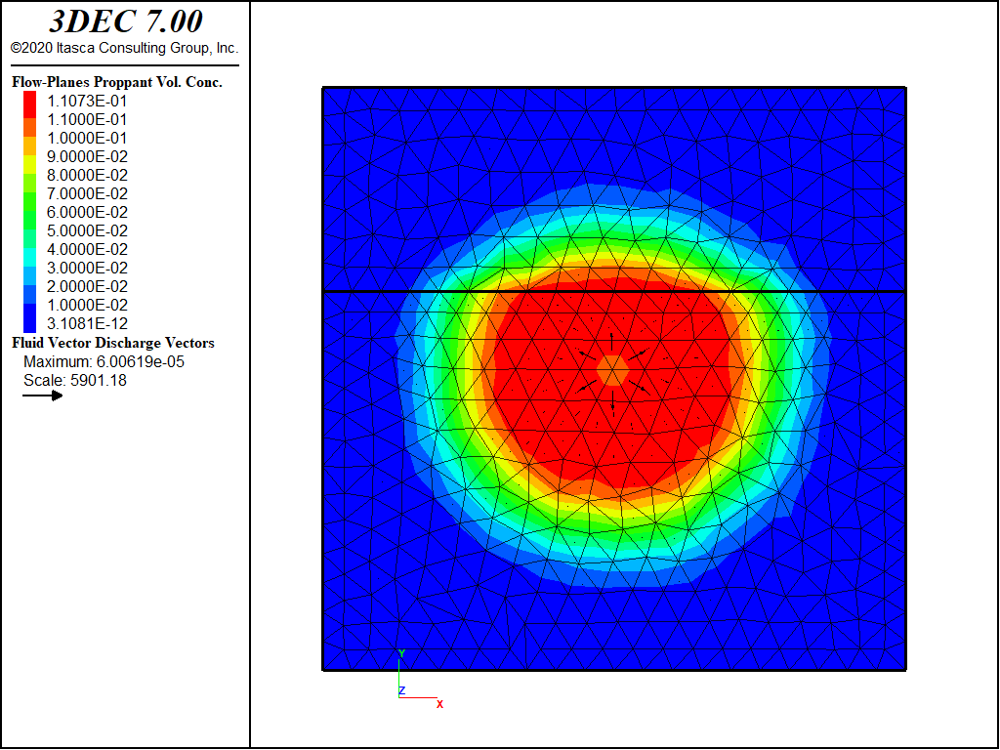
图 14：无支撑剂桥堵时（粒径系数 = 1），注入 10 s 后的支撑剂浓度。

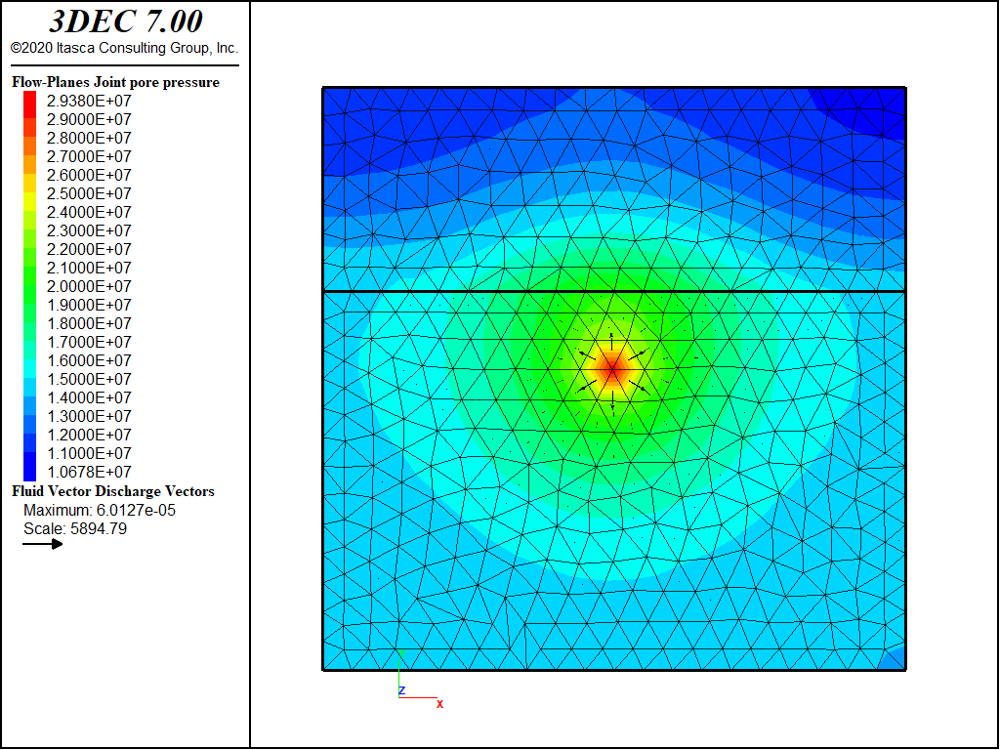
图 15：支撑剂桥堵（颗粒尺寸系数 = 3）情况下注入 10 s 后的孔隙压力。

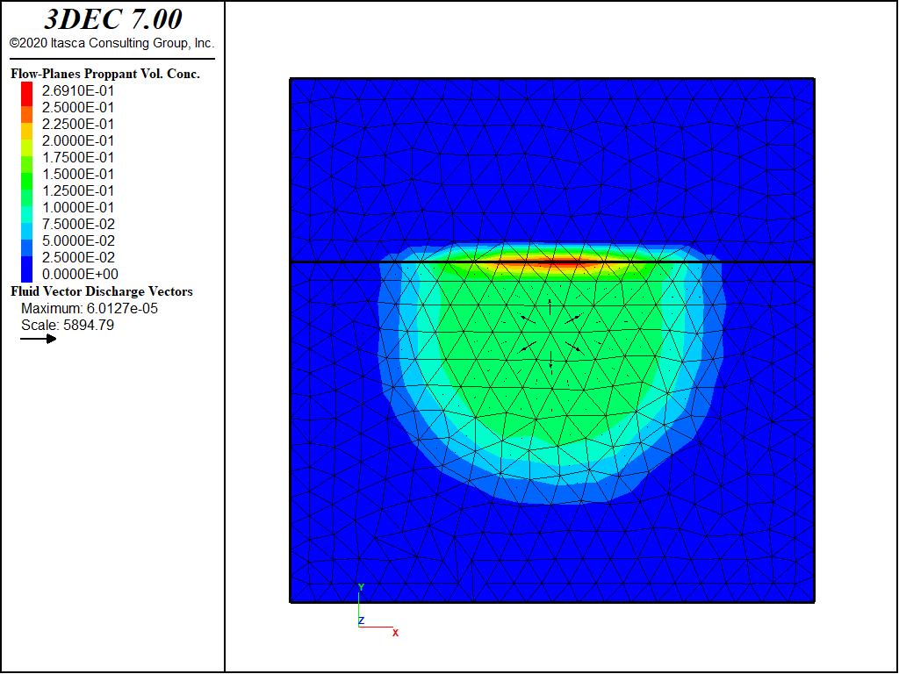
图 16：有支撑剂桥堵时（粒径系数 = 3），注入 10 s 后的支撑剂浓度。
数据文件
model new
model random 10000
model config fluid
model large-strain off
;
block create brick -5 5 -5.0 5.0 -5 5
block cut joint-set dip 90 origin 0 1.5 0
block join
block cut joint-set
;
block zone generate edgelength 0.5
block zone cmodel assign elastic
block zone property density 2500 shear 2e9 bulk 5e9
;
block contact jmodel assign mohr
block contact property stiffness-normal 5e10 stiffness-shear 1e10
; 使顶部缝宽小于底部
flowplane vertex property aperture-initial 1e-4 aperture-minimum 1e-5 ...
aperture-maximum 2e-4
flowplane hide range pos-y -5 1.5
flowplane vertex property aperture-initial 0.8e-4 aperture-minimum 0.8e-5 ...
aperture-maximum 1.6e-4
flowplane hide off
block fluid property bulk 0.05e9 density 1000 viscosity 1e-3
;
block insitu stress 0 0 -3e6 0 0 0
;
block face apply stress 0 0 -3.0e6 0 0 0 range position-z 5
block gridpoint apply velocity-x 0 velocity-y 0 velocity-z 0 ...
range position-z -5
;
flowknot history pore-pressure position 0 -5 0
flowknot history pore-pressure position 0 -2 0
flowknot history pore-pressure position 0 0 0
flowknot history pore-pressure position 0 2 0
flowplane vertex history proppant-vconcentration position 0 -2 0
flowplane vertex history proppant-vconcentration position 0 0 0
flowplane vertex history proppant-vconcentration position 0 2 0
;
flowknot apply discharge 0.0001 ...
range position-x -0.3 0.2 position-y -0.3 0.3 position-z -0.1 0.1
flowknot apply proppant-volume 0.1 ...
range position-x -0.3 0.2 position-y -0.3 0.3 position-z -0.1 0.1
;
block fluid proppant grain-size 1e-5
block fluid proppant permeability-factor 0.1
;
model fluid active on
model mechanical active off
block fluid proppant active on
;
model save 'bridging-ini'
;
model solve fluid time 10.0
model save 'bridging-factor1'
;
======================================================
;
; 现在通过增大粒径系数来测试桥接
model restore 'bridging-ini'
;
block fluid proppant grain-size-factor 3.0
;
model solve fluid time 10.0
model save 'bridging-factor3'
;
program return
;
;
支撑剂沉降
为说明支撑剂在重力下的沉降，给出一个含单条垂直裂缝的简单模型。初始孔隙压力设为 5 MPa，并沿一条边以 0.0007 m2/s 的速率注入流体（不含支撑剂）。2 s 后的压力见图 17（Figure 17）。该算例中把流体体积模量设为一个不切实际的小值（0.01 MPa）以加快求解，因此该时间并不代表实际时间。
随后以浓度 0.1 向注入流体中加入支撑剂。为支撑剂指定实际的密度（2650 kg/m2）和颗粒尺寸（0.425 mm），并开启支撑剂沉降。最大浓度指定为 0.7，这意味着浓度达到该值时支撑剂已紧密堆积、浓度无法继续增大。此外，渗透率将会下降，反映这些区域中流动因收缩而受限。支撑剂充填层的固有渗透率设为一个低值（5.33 × 10−13 m2）。
注入支撑剂 20 s 和 40 s 后的支撑剂浓度与流动矢量分别见图 18（Figure 18）和图 19（Figure 19）。这些图显示支撑剂如何沉降到裂缝底部并形成一个“沉积堤”，由于该区域渗透率降低、支撑剂流动受限，流体和支撑剂必须从沉积堤上方流过。

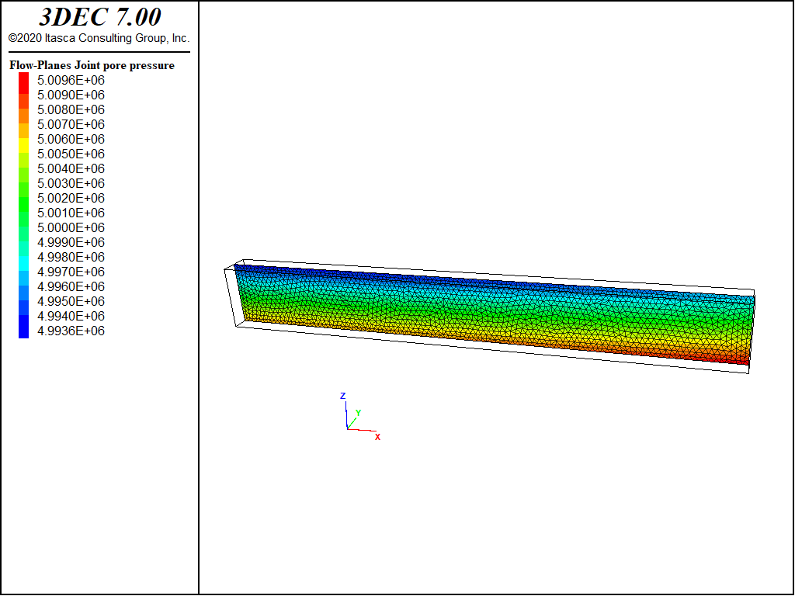
图 17：注入支撑剂之前的孔隙压力。

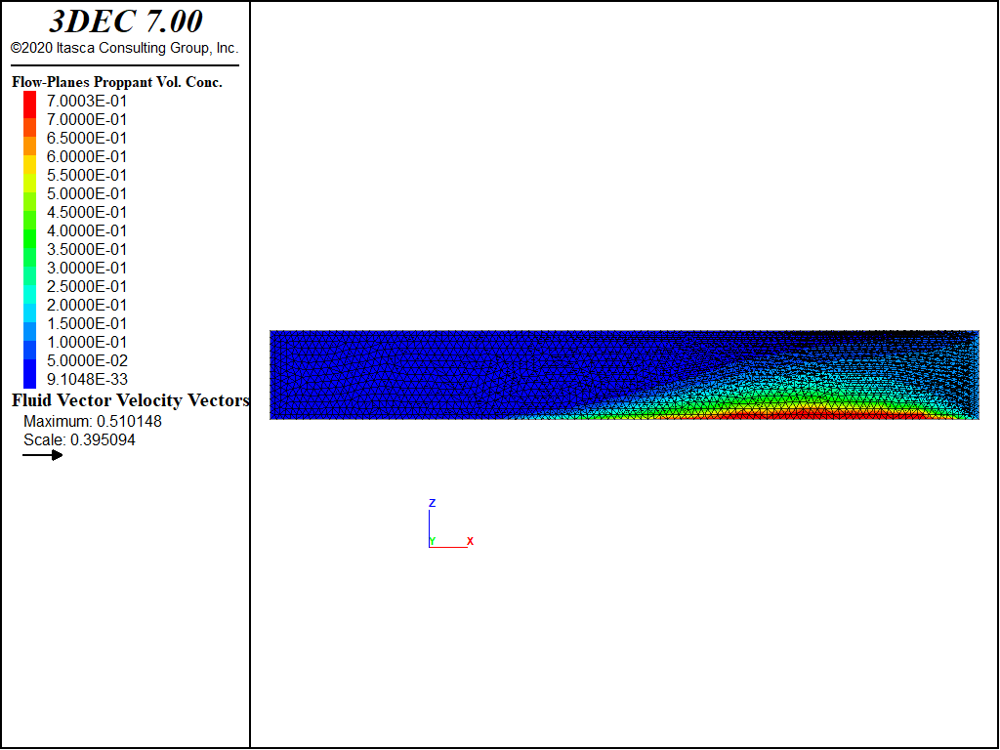
图 18：注入支撑剂 20 s 后的支撑剂浓度与流速。
数据文件
model new
model random 10000
model config fluid
model large-strain off
;
block create brick -4.0 4.0 -0.25 0.25 -0.5 0.5
block cut joint-set dip 90 dip-direction 0
;
block zone generate edgelength 0.075
block zone cmodel assign elastic
block zone property density 2500 shear 2e9 bulk 5e9
model save "mesh"
block contact jmodel assign mohr
block contact property stiffness-normal 5e10 stiffness-shear 1e10
block contact property friction 40 cohesion 0.0 tension 0.0
flowplane vertex property aperture-initial 2e-3 aperture-minimum 2e-3 ...
aperture-maximum 1e-2
; 注意，为加快求解采用了较低的流体模量
block fluid property bulk 1e4 density 1300 viscosity 1e-3
;
block insitu stress 0 -10.0e6 0 0 0 0 gradient-z 0.0 1.6e4 0.0 0.0 0.0 0.0
block insitu pore-pressure 5.0e6 gradient 0.0 0.0 0.0
;
model gravity 0.0 0.0 -10.0
;
block gridpoint apply velocity 0 0 0 range position-y -0.25
block gridpoint apply velocity 0 0 0 range position-y 0.25
;
history interval 1000
model history fluid time
block history displacement-z position 0 0 0
flowknot history pore-pressure position 0 0 0
;
flowplane edge apply discharge 0.0007 range position-x 4
;
model fluid active on
model mechanical active off
model solve fluid time 2.0
model save 'settlement_ini'
;
;
flowplane vertex history proppant-vconcentration position 0 0 0.5
flowplane vertex history proppant-vconcentration position 0 0 0
flowplane vertex history proppant-vconcentration position 0 0 -0.5
flowplane vertex history proppant-thickness position 0 0 0.5
flowplane vertex history proppant-thickness position 0 0 0
flowplane vertex history proppant-thickness position 0 0 -0.5
;
block fluid proppant concentration-limit-volume 0.7
block fluid proppant permeability 5.33e-13
block fluid proppant grain-size 0.425e-3
;
block fluid proppant density 2.65e3
block fluid proppant settling on
block fluid proppant active on
;
flowknot apply proppant-volume 0.1 range position-x 4
;
model solve fluid time 10.0
model save 'settlement_10s'
;
model solve fluid time 10.0
model save 'settlement_20s'
;
model solve fluid time 10.0
model save 'settlement_30s'
;
model solve fluid time 10.0
model save 'settlement_40s'
;
| 这些内容对您有帮助吗？… | FLAC3D © 2019, Itasca | 原文更新于 2020 年 10 月 8 日 |